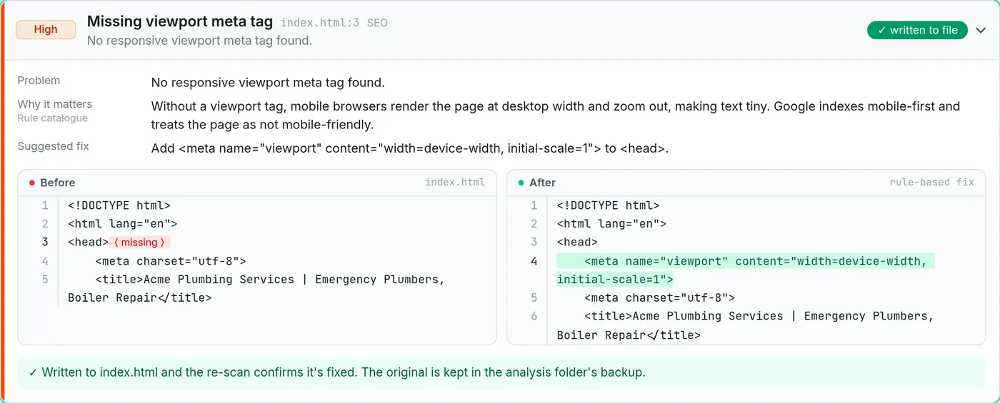

One at a time
Write fix to file.
Changes that exact spot in your file immediately, after backing up the original. Line numbers in subsequent issues update automatically.
✓ Original backed up
✓ Re-scan confirms
